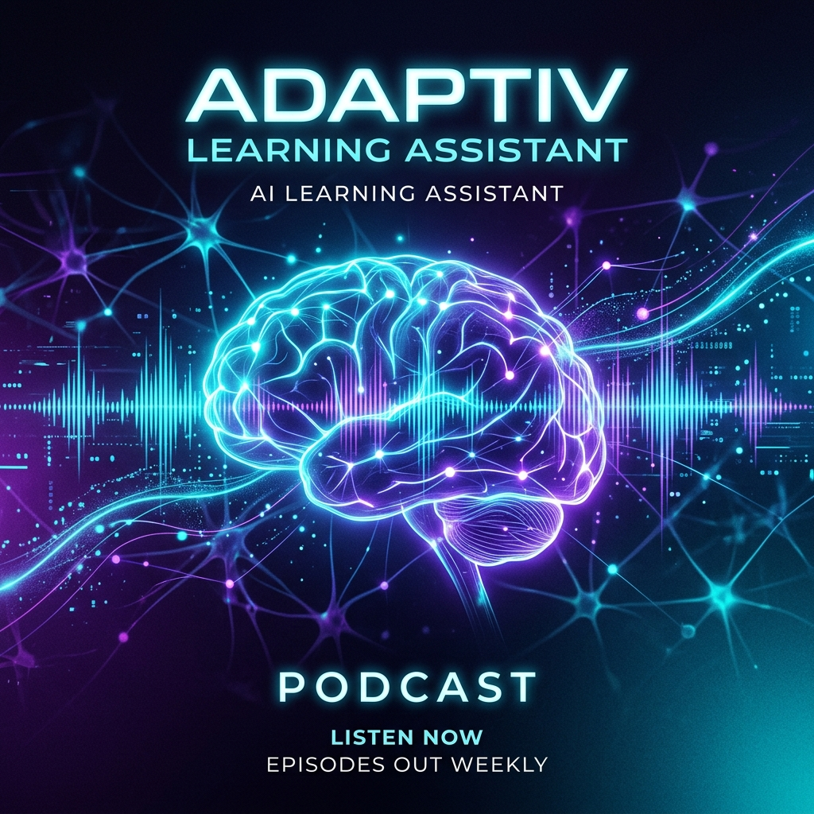

Audio Overview
Modul Sistem Operasi.pdf
0:00
8:42
Transkrip AI
A
Alex
M
Maya
Alex
Halo Maya! Hari ini kita akan membahas dokumen yang sangat menarik: "Modul Sistem Operasi".
Dokumen ini cukup tebal, jadi mari kita bedah poin-poin pentingnya untuk pendengar kita.
Maya
Hai Alex! Benar sekali. Yang membuat saya terkesan adalah bagaimana modul ini menjelaskan
konsep kernel. Bayangkan kernel itu seperti jantung dari sistem operasi, yang menjembatani hardware dan
software.
Alex
Analogi yang bagus, Maya. Dan di bab kedua, penulis membahas tentang "Process Management".
Ini krusial karena menentukan bagaimana CPU mengalokasikan waktu untuk berbagai aplikasi yang berjalan
bersamaan.
Maya
Tepat. Modul ini juga menekankan pada "Memory Management". Bagaimana sistem memastikan satu
program tidak mengambil memori program lain. Tanpa ini, komputer kita pasti akan sering crash.
Alex
Menariknya, ada bagian tentang "Deadlocks" — situasi di mana dua proses saling menunggu satu
sama lain dan tidak ada yang bisa jalan. Seperti macet di persimpangan jalan yang terkunci.
Maya
Betul! Dan solusi yang ditawarkan dalam modul ini, seperti algoritma Banker, sangat membantu
untuk memahami pencegahannya secara teoritis.
Alex
Mari kita lanjutkan ke bab selanjutnya tentang File Systems...